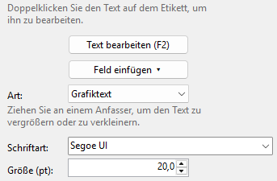
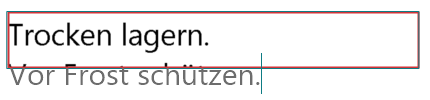
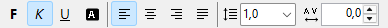
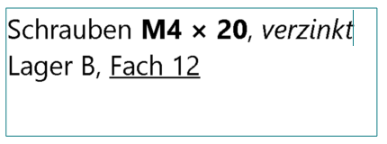

Grafiktext und Mengentext
Ein Text ist entweder ein Grafiktext (eine Zeile, der Rahmen folgt dem Text) oder ein Mengentext (mehrere Zeilen, die in ihrem Rahmen umbrechen). Sie schreiben direkt auf dem Etikett und sehen dabei, was gedruckt wird. Alles Weitere stellen Sie rechts bei den Einstellungen ein.
-
Auf dem Etikett schreiben
Doppelklicken Sie einen Text, um ihn zu bearbeiten: Die Schreibmarke steht an der Stelle des Doppelklicks. Ist der Text ausgewählt, funktionieren auch F2, die Eingabetaste, Text bearbeiten (F2) rechts oder einfach Lostippen; die Schreibmarke steht dann am Ende. Ein neuer Text ist zuerst nur ausgewählt, so können Sie ihn an seinen Platz schieben; tippen Sie dann los, ersetzt das den Platzhalter „Text“.

Beim Bearbeiten hat der Text einen dünnen Rahmen ohne Anfasser; verschieben und vergrößern können Sie ihn erst danach. Die Statusleiste sagt „Text bearbeiten – Esc oder ein Klick daneben beendet.“ Esc, ein Klick neben den Text oder ein anderes Werkzeug beendet das Bearbeiten, die Änderungen bleiben. Ein Text, der dabei leer geworden ist, wird entfernt.
Felder wie
{date}zeigen beim Bearbeiten ihren Code in einem hellgrauen Kasten, danach wieder ihren Wert. Bearbeiten > Rückgängig nimmt beim Bearbeiten den letzten Schritt zurück (ein Wort, ein Format, ein Einfügen), danach das ganze Bearbeiten auf einmal. -
Grafiktext
Werkzeug Grafiktext oder Einfügen > Grafiktext. Der Rahmen passt sich immer dem Text an. Ziehen Sie an einem Anfasser, um den Text zu vergrößern oder zu verkleinern; die gegenüberliegende Seite bleibt dabei stehen. Oder tippen Sie die Größe (pt) ein.
Die Eingabetaste beendet hier das Bearbeiten; eingefügte Zeilenumbrüche werden zu Leerzeichen.
-
Mengentext
Werkzeug Mengentext oder Einfügen > Mengentext. Den Rahmen legen Sie mit den Anfassern fest; der Text bricht an seinem Rand in seiner Schriftgröße um. Ein Wort, das länger als eine Zeile ist, wird zwischen Buchstaben getrennt.
Oben in der Symbolleiste richten Sie die Zeilen aus (Linksbündig, Zentriert, Rechtsbündig, Blocksatz) und wählen den Zeilenabstand: 1,0, 1,15, 1,5, 2,0 oder einen eigenen Wert von 0,5 bis 3. Im Blocksatz reichen die umbrochenen Zeilen bis an beide Ränder des Rahmens; die letzte Zeile eines Absatzes bleibt linksbündig, wie in Word.
Die Eingabetaste beginnt einen neuen Absatz.
Passt der Text nicht in den Rahmen, wird er am Rahmen abgeschnitten. Der Rahmen bekommt dann auf dem Bildschirm einen roten Rand, und rechts steht ein roter Hinweis. Beim Bearbeiten erscheinen die abgeschnittenen Zeilen hellgrau unter dem Rahmen, damit Sie sehen, was Sie dort tippen; gedruckt werden sie nicht.

Mit Ansicht > Überlauf beim Bearbeiten zeigen schalten Sie das aus: Dann rollt der Text im Rahmen zur Zeile der Schreibmarke.
-
Wörter mit eigenem Format
In Grafiktext und Mengentext können einzelne Wörter fett, kursiv, unterstrichen, weiß auf schwarz, gesperrt oder in einer anderen Schrift oder Größe sein. Markieren Sie sie beim Bearbeiten auf dem Etikett und drücken Sie Strg + B, I oder U, oder klicken Sie oben in der Symbolleiste auf F, K, U oder Invertieren, oder ändern Sie dort den Zeichenabstand (pt). Schriftart und Größe (pt) ändern Sie rechts; eine Zeile dort sagt, wofür sie gelten.


Ohne Markierung gelten die Formate für das, was Sie als Nächstes tippen. Wird der Text nicht bearbeitet, gelten die Knöpfe und Einstellungen für den ganzen Text. Wo sich die markierten Wörter unterscheiden, bleiben Schriftart, Größe und Zeichenabstand leer, und F, K, U oder Invertieren sind schraffiert (teilweise). Ein Klick darauf formatiert die ganze Markierung, der nächste nimmt das Format überall wieder weg.
Text aus Word oder WordPad behält beim Einfügen seine Formate; reiner Text bekommt das Format an der Schreibmarke. Ein Grafiktext bleibt eine Zeile: Eingefügte Zeilenumbrüche werden zu Leerzeichen. Die Anfasser eines Grafiktexts vergrößern oder verkleinern alle Wörter im gleichen Verhältnis. Art behält die Formate der Wörter in beide Richtungen.
-
Zwischen beiden wechseln
Art wechselt zwischen Grafiktext und Mengentext. Aus einem Mengentext wird eine Zeile (Zeilenumbrüche werden zu Leerzeichen), aus einem Grafiktext ein Mengentext in einem Rahmen um den Text.
-
Schrift
Schriftart und Größe (pt) stehen rechts. Oben in der Symbolleiste stehen F, K, U, Invertieren und der Zeichenabstand (pt) von −5 bis +20; sie gelten für beide Arten, beim Bearbeiten für die markierten Zeichen. Invertieren druckt den Text weiß auf schwarz: Weiß auf Schwarz.
Ohne ausgewählten Text sind die Knöpfe grau. Beim Grafiktext sind Ausrichtung und Zeilenabstand grau, denn er ist einzeilig. Fährt die Maus über einen Knopf, nennt er seine Taste.
-
Datum und Uhrzeit
Feld einfügen ▾ fügt an der Schreibmarke ein Feld ein (wird der Text nicht bearbeitet, an seinem Ende), das beim Anzeigen und Drucken ausgefüllt wird:
{date}- das heutige Datum
{date+30}- das Datum in 30 Tagen;
{date-1}ist gestern {time}- die Uhrzeit
{date:yyyy-MM-dd}- mit eigenem Format nach dem Doppelpunkt, z. B.
{date+7:dd.MM.yy}oder{time:HH:mm}
Ohne Format sehen Datum und Uhrzeit aus wie in Ihren Windows-Einstellungen.
{{und}}drucken einzelne geschweifte Klammern. Beispiel für ein Gefrierschild: „Eingefroren {date} – verbrauchen bis {date+90}“.Felder funktionieren auch im Inhalt von Barcodes und QR-Codes.